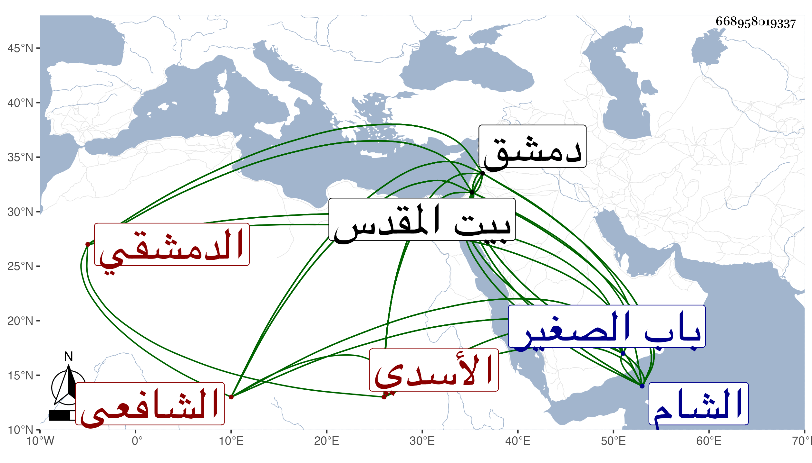

0902Sakhawi.DawLamic.ITO20230111-ara1.EIS1600.668958019337
Biography ID: 668958019337
61
أبو بكر بن أحمد بن محمد بن عمر بن محمد بن عبد الوهاب بن محمد بن ذؤيب بن مشرف التقي بن الشهاب بن الشمس بن النجم بن الشرف الأسدي الشهبي الدمشقي الشافعي والد البدر محمد وحمزة من بيت كبير أشرت لمن عرفته منهم في المعجم ويعرف كسلفه بابن قاضي شهبة لكون النجم والد جده أقام قاضيا بشهبة السوداء أربعين سنة . ولد في رابع عشري ربيع الأول سنة تسع وسبعين وسبعمائة بدمشق ومات أبوه وهو ابن إحدى عشرة سنة بعد أن أحضره على والده في الثانية والثالثة والرابعة ومما حمله عنه البخاري فاشتغل بالعلم وأخذ عن جماعة منهم كما قرأته بخطه السراج البلقيني قال وهو أعلاهم والشهب الزهري وابن حجي والملكاوي الشرفان الشريشي والغزي والجمال الطيماني والزين القرشي الحافظ والبدر بن مكتوم والشمس الصرخدي وسمع كما بخطه من أبي هريرة بن الذهبي والعلاء بن أبي المجد وابن صديق وكما يخط بعضهم من غيرهم ومن جده الشمس وتدرب في التاريخ بالشهاب بن حجي وله على تاريخه ذيل انتهى فيه إلى سنة أربعين كذا عمل مختصرا لطيفا مفيدا في طبقات الشافعية استمد فيه بل وفي سائر تعاليقه التاريخية من تصانيف شيخنا ومراسلاته حسبما يصرح بالنقل عنه وعليه فيها عدة مؤاخذات وفنه الذي طار اسم به هو الفقه قد انتهت إليه الرياسة فيه ببلده بل صار فقيه الشام وعالمها ورئيسها ومؤرخها وتصدى للإفتاء والتدريس فانتفع به خلق وحدث ببلده وببيت المقدس سمع منه الفضلاء أجاز لي ودرس بالسرورية والأمجدية والمجاهدية والظاهرية والناصرية والعذراوية والركنية وغيرها وناب في تدريس الشاميتين وصار الأعيان في وقته ببلده من تلامذته ورحل إليه من الأماكن النائية كل ذلك مع الذكاء والفصاحة والشهامة والديانة وحسن الخلق والمحاسن الوافرة ومن تصانيفه سوى ما تقدم شرح المنهاج سماه كفاية المحتاج إلى توجيه المنهاج ولكنه لم يكمل وقف فيه مكان وقف السبكي في الخلع في أربع مجلدات وشرح التنبيه سماه كافي النبيه وحج وزار بيت المقدس وناب في القضاء بدمشق مدة ثم استقل به في جمادى الأولى سنة اثنتين وأربعين عوضا عن الكمال ابن البارزي ولم يلبث أن صرف بالبهاء بن حجي لكونه خطب في واقعة إينال الجكمي للعزيز يوسف بن الأشرف برسباي ثم أعيد بعد الونائي في شوال التي تليها وانفصل عن قرب أول سنة أربع وأربعين وانقطع للعلم وسافر قبيل موته بجميع عياله لزيارة بيت المقدس في رمضان وقصد الشهاب أبا البقا الزبيري بالمدرسة الطولونية لزيارته فقيل أنه تكلم على بعض المحال من البخاري بحضرة المزور بما أبهت به من حضر حتى قال بعضهم لو كان هنا ابن حجر لم يتكلم بأكثر ولا أحسن وتحققوا بذلك تقدمه فيما عدا الفقه أيضا ولما انقضى أربه من الزيارة عاد فمات فجأة وهو جالس يصنف ويكلم ولده البدر بعد عصر يوم الخميس حادي عشر ذي القعدة سنة إحدى وخمسين ودفن من الغد بمقبرة باب الصغير عند سلفه وكان له مشهد لم ير لأحد من أهل عصره مثله وتأسف الدمشقيون على فقده ومن الغريب ما حكاه ولده أنه قبل موته أظنه بيوم ذكر موت الفجأة وأنه إنما أخذة أسف للكافر وأما المؤمن فهو له رحمة وقرر ذلك تقريرا شافيا قلت وقد ترجم البخاري في الجنائز من صحيحه موت الفجأة وقد ترجمه بعض المتأخرين فقال أنه ناب مدة بشهامة وصرامة وحرمة وكلمة نافذة ثم استقل مرتين وانتهت إليه رياسة المذهب في زمانه بل رياسة الشام كلها وصار مرجعها إليه ومعولها في مشكلاتها عليه ورزق من ذلك ما لم يرزقه فيه غيره حتى قال الحسام الحنفي أنه لم يحصل لشافعي قط ما حصل له فإنه يرى نص الشافعي في مسئلة فتواه على خلافه فيعمل بها لكونه عندهم أخبر بنص الشافعي من غيره ولم يدانه في زمانه بل ولا قبله من مدد في معرفة فروع الشافعية سيما تخريج كلام المتأخرين أحد وكتب بخطه الكثير بحيث لو قال القائل أنه كتب مائتي مجلد لم يتجاوز وخطه فائق دقيق وبيع في تركته نحو سبعمائة مجلد كاد أن يستوفيها مطالعة وألف التاريخ الكبير ابتدأ فيه من سنة مائتين إلى سنة اثنتين وتسعين وسبعمائة وفي أثنائه خرم أكمله بعض تلامذته وذيلا على تواريخ المتأخرين الذهبي والبرزالي وابن رافع وابن كثير وغيرهم وابتدأه من سنة إحدى وأربعين وسبعمائة إلى سنة نيف وعشرين وثمانمائة في ثمان مجلدات واختصره في مجلدين ثم اختصره في مجلد وكتب حوادث زمنه إلى يوم وفاته وعمل طبقات الشافعية والحنفية إلى غير ذلك مما لا يحصى اختصارا وانتقاء وجمعا قال العز القدسي دخلت دمشق قبل الفتنة فلم أر فيها ولا سمعت ممن نشأ أحسن منه صورة وسيرة وكان شكلا حسنا يلبس القماش النفيس ويركب البغال المثمنة معظما مكرما وقورا لا يخاطب غالبا إلا جوابا عليه جلالة ومهابة عنده نفرة من الناس وبعض حدة مزاج لم أر مثله في معناه ولما أرسل الظاهر جقمق رسوله لشاه رخ كان أحد أربعة سأله عنهم فأجابه ببقائهم فقال الحمد لله بعد في الناس بقية حج في سنة سبع وثلاثين وقدم القدس في المحرم سنة إحدى وخمسين للزيارة ثم عاد إلى أن مات في عصر يوم الخميس عاشر ذي القعدة منها فجأة وأخرج من الغد بعد أن صلى عليه بعد الجمعة في مشهد حافل لم يعهد نظيره في هذه الأزمان ومشى فيه النائب والحجاب والقضاة ونوابهم والعلماء والفقهاء وسائر الناس ودفن بمقابر باب الصغير عند أبيه وجده بالقرب من تربة بلال ورؤيت له منامات كثيرة حسنة ذكرها ولده في مجلدة وافرد من مناقبه أيضا جملة ورثى بمراث كثيرة فيها مرثية للشمس القدسي أولها
| عليك تقي الدين تبكي المنازل | لقد كنت مأمولا إذا أم نازل |
ولمحمد الفراش أولها
| لموتك أيها الصدر الرئيس | تعطل الدارس والمدروس |
ولم يخلف بعده مثله وكان في يوم الأربعاء درس بالتقوية وذكر الخلاف في موت الفجأة ثم قال وأنا أختاره لمن هو على بصيرة لأن أقل ما فيه أمن الفتنة عند الموت ثم ركب منها فلما استوى على بغلته قال لولده البدر والله يا بني ما بقي فينا شيء ثم توجه للناصرية فدرس بها وجره الكلام إلى فضل الموت يوم الجمعة وليلتها ثم سأل الله الوفاة في ذلك فأجاب الله دعوته فإنه لما كان ثاني يوم بعد العصر وهو جالس يحدث ولده والقلم بيده وهو يكتب فوضع القلم في الدواة واستند إلى المخدة والتوى رأسه فقام إليه ولده فوجده قد مات بحيث قال ولده والله والله ما أعلم أنه حصل له من ألم الموت ما يحصل من ألم الفصادة إلا دون ذلك رحمه الله وإيانا .
